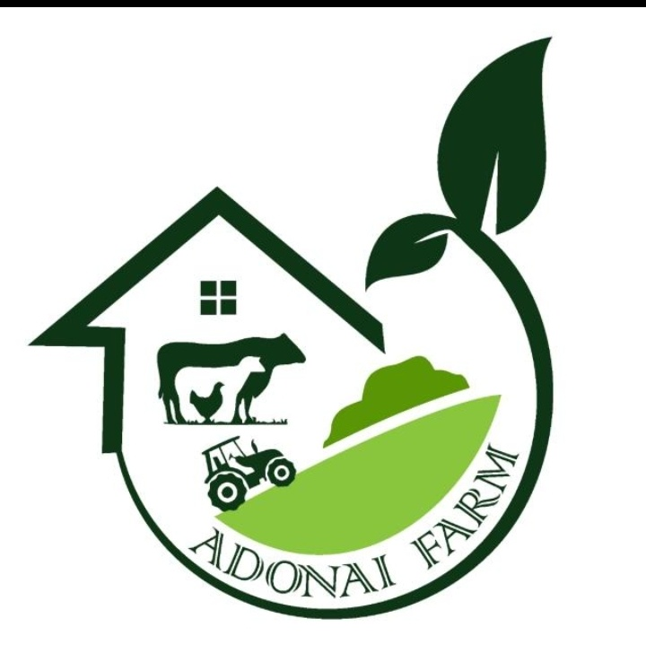
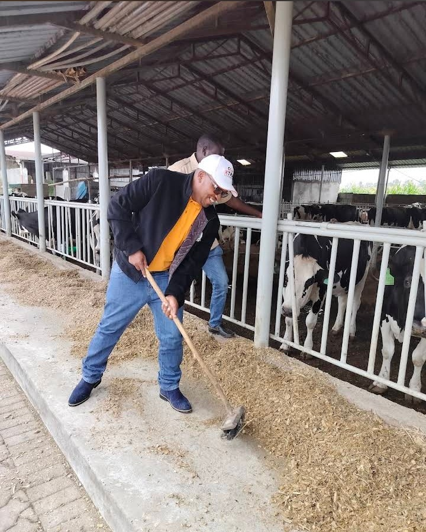
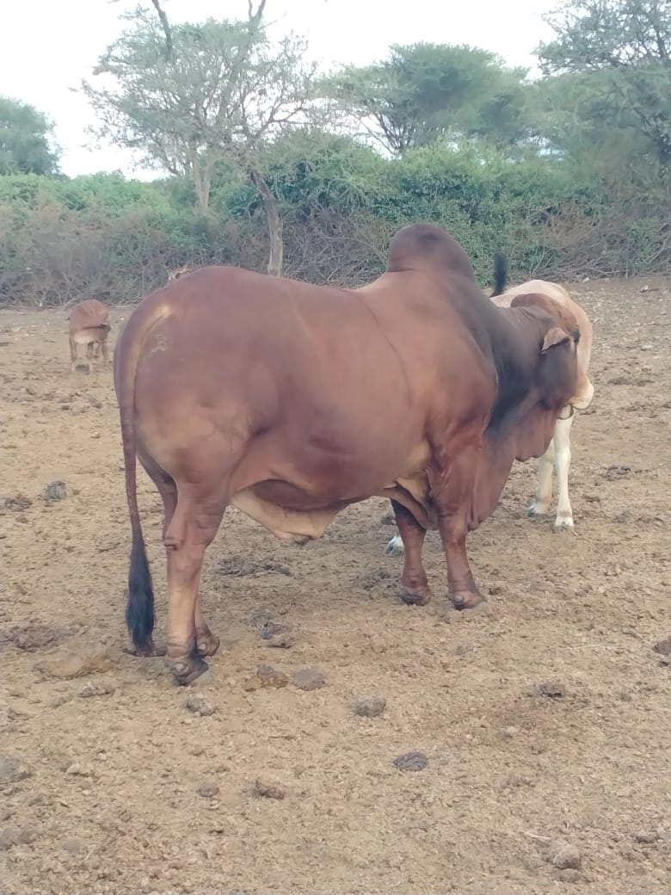
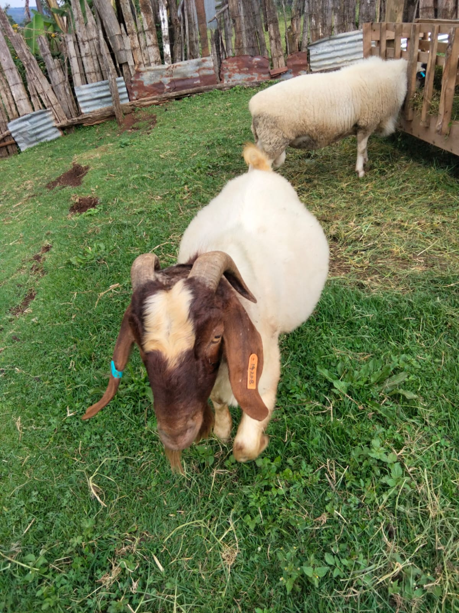
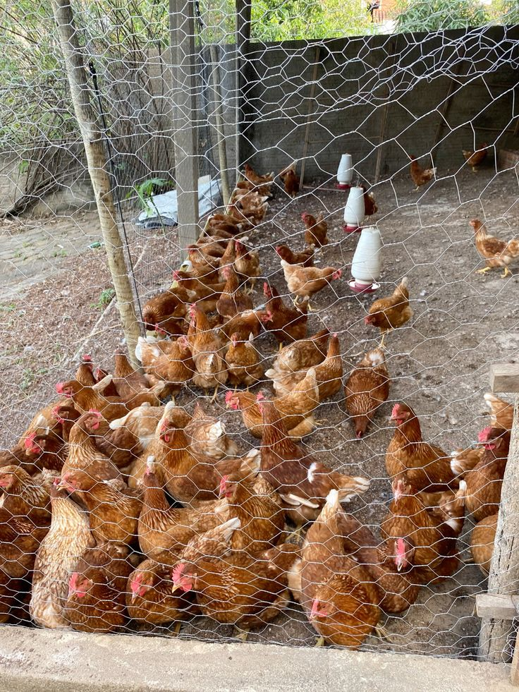
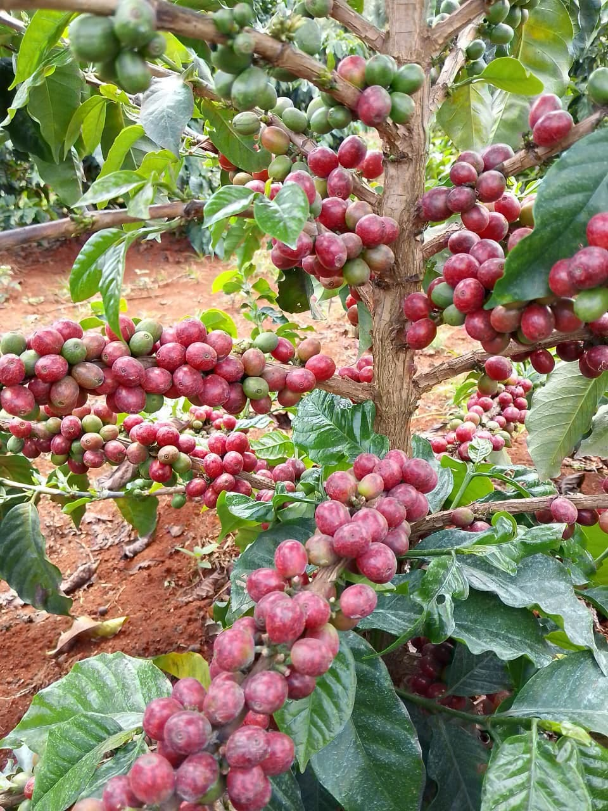
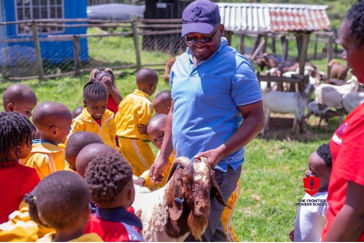
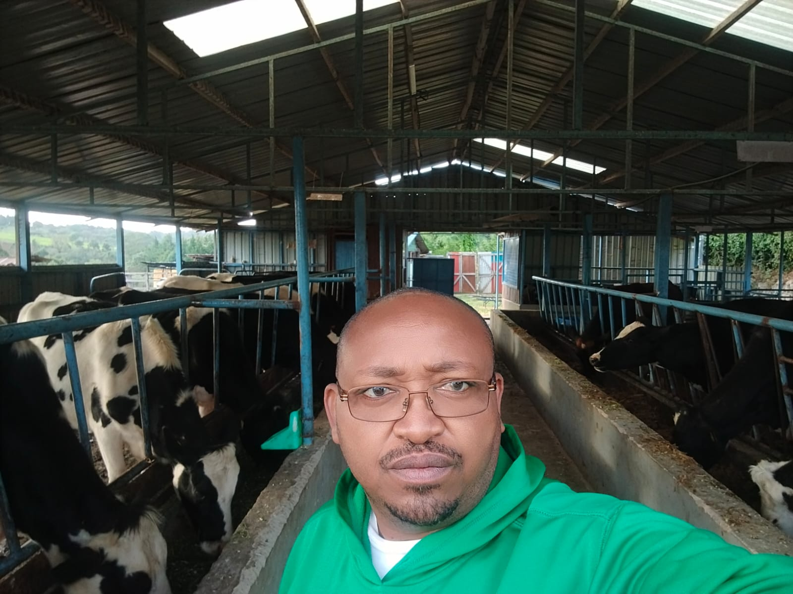

01
Dairy Cattle
Healthy dairy animals managed with care and modern livestock practices.

Adonai FarmKericho, Kenya WhatsApp usSUSTAINABLE LIVESTOCK • CHEPSIR, KERICHO
Modern livestock management rooted in care, sustainability and a deep respect for the land.
A modern farm with traditional values.
At Adonai Farm, traditional farming wisdom meets modern technology. We raise healthy livestock, produce quality farm products and work toward sustainable practices that benefit both animals and the environment.
Our farm in Chepsir, Kericho is built around three simple principles: sustainable farming, animal welfare and quality you can trust.
Come experience the farm →
Erick Togom is the owner and driving force behind Adonai Farm. With years of hands-on experience in sustainable agriculture and small-business leadership, Erick has built the operation around responsible stewardship of the land, consistent product quality, and respect for the local community.
He combines practical farming expertise with innovation to improve soil health and reduce environmental impact, while prioritizing transparency and community engagement through education and local initiatives.
Erick Togom — cultivating quality, community, and sustainability, one season at a time.
From dairy cattle and breeding stock to goats, sheep and free-range poultry.
Healthy dairy animals managed with care and modern livestock practices.

Quality genetics and professional livestock breeding programs.

Healthy small-stock raised for quality products and breeding.

Farm-fresh eggs from well-managed, free-range chickens.

Shade-grown coffee and tea cultivation managed with sustainable, soil-friendly practices.
Fresh milk, mala, yoghurt.
Fresh free-range eggs produced on the farm.
Quality beef from pasture-raised cattle.
Educational visits for schools, families and enthusiasts.
Livestock breeding and fattening .
Good farming isn't only about what we produce. It's about how we care for the land, the animals and the people around us.
— Adonai Farm
A look inside daily life on the farm — animal care and milking routines, feed and pasture management, the team at work, and our produce post-harvest. Use on-site photos showing the everyday activities that make Adonai run.

Daily farm life
Team & familyInterested in our products, breeding services or a farm tour? Get in touch and let's talk.